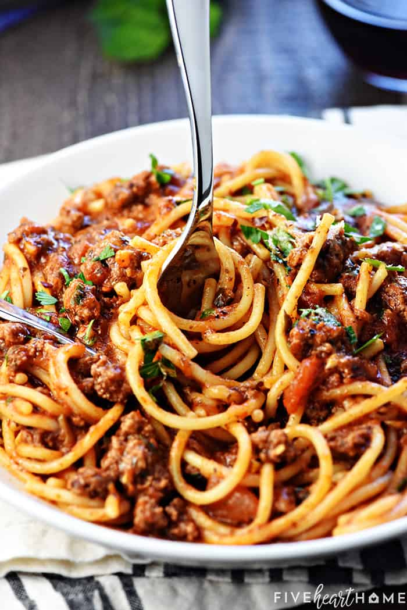

About Us
Do you like western food and local food? Do you know that western food and local food is spread out in all of the world. Many cuisines were spread in the world however western food and local food was spread a lot in the world, and many people around the world like western food also local food.


Menus

This is Local Cuisines and called Nasi Kerabu. NASI KERABU is a Malay dish, a type of nasi ulam. It is served with blue-coloured rice is eaten with dried fish, fried chicken or meat crackers, pickles and other salad . It is often eaten with solok lada and also eaten with fried keropok. Price: RM9.00 (Include Syrup).
This is Western Cuisines and called Spaghetti. SPAGHETTI served with dry long pasta . Pasta will served with a prego sauce that will be cooked with shredded meat. Price: RM10.00 (Include syrup).
Contact Us
FOR RESERVATION: Whatsapp/Call: 012-3456789 @ 012-1124567 or Email: D'Corner@gmail.com